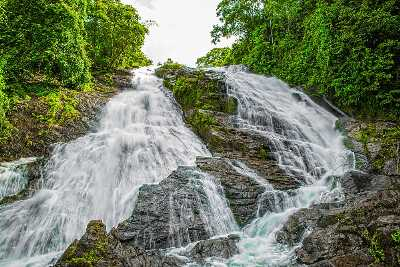
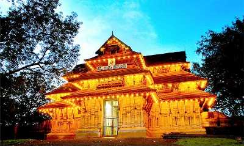

TRISSUR
Athirapally Falls

Located 60 km from the Thrissur district of Kerala, Athirapally Falls is a marvellous cascade of frothy waters that makes its way from the Anamudi mountains of the Western Ghats. Also called as Bahubali Waterfall, this 80 ft high and 330 ft wide marvel is the largest waterfall in Kerala. It is often referred to as the "Niagara Falls of India". From here, the Athirapally falls flows through the verdant greenery of Vazhachal Forest toward the Arabian Sea, creating a spectacular vista of scintillating water, emerald jungles and azure sky. When you land in Athirapally, you are greeted with the sight of charming green Sholayar Peaks peering over the rushing gush of the falls. Standing against the backdrop of a rustling jungle foliage, this many films and music videos are shot here. Another interesting fact to note is that the fall joins forces with the Chalakkudy river before reaching its final destination into the sea.
Charpa Falls
Charpa Falls is another one of the nature's delight that displays the blessings of Mother Nature. Cascading down from a shot height, this fall which is a part of River Chalakkudy offers a breathtaking experience. Athirappilly Falls and Lake Vachumaram are a stone's throw away from Charpa Falls.
Shakthan Thampuran Palace

Shakthan Thampuran Palace situated in the town of Thrissur marks the royal residence of the king of Cochin and has been a famous tourist attraction because of its historical value. Popularly known as Vadakkekara Palace, it dated back to the time of the King of Cochin named Rama Varma Shakthan Thampuran and was constructed in 1795. The king was a very generous ruler, and the duration of his reign was known as the 'Golden Age of Kochi'. The beautiful palace with an amalgamation of Kerela and Dutch style of architecture is worth laying eyes on and should not be missed out on if you're on a trip to Thrissur. The striking feature of this palace is that it consists of a shrine for the God of serpents known as Serpent Grove (Sarpakaavu). Numerous species of flora and fauna can be spotted too in the heritage garden present inside the premises.
Vadakummnathan temple
With a collection of beautiful Mural paintings, some of which are more than 400 years old, this gigantic 1000 year old temple and historical structure is famous for the Nataraja Mural near the main gate. The structure till date, displays its original colors without much preservation. The shrine of Vadakkumnathan is also situated there, which is apparently covered completely under ghee for centuries, without any incidence of melting. The shrines of Mahavishnu and Shankaranarayan are also located in the temple. It features one of the largest Dance Hall, called Koothambalam which depict unique Keralan architecture. It hosts traditional performances called Nangyar Koothu. Just outside the temple complex are situated the Thiruvambadi Krishna Temple and Paramekkavu Devi Temple, which are considered to be the sister temples of Vadakummnathan. This Temple is strictly open to Hindus. Non-Hindus are not allowed inside, but they can stand outside and look at the photos from there.